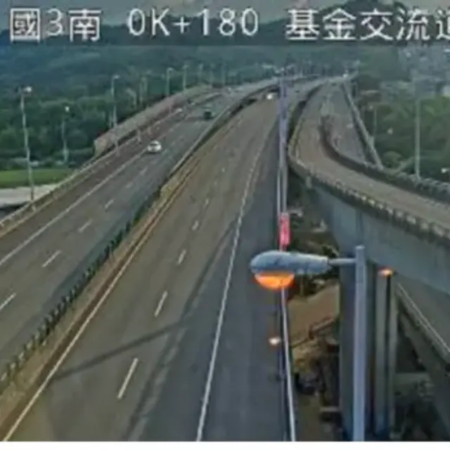
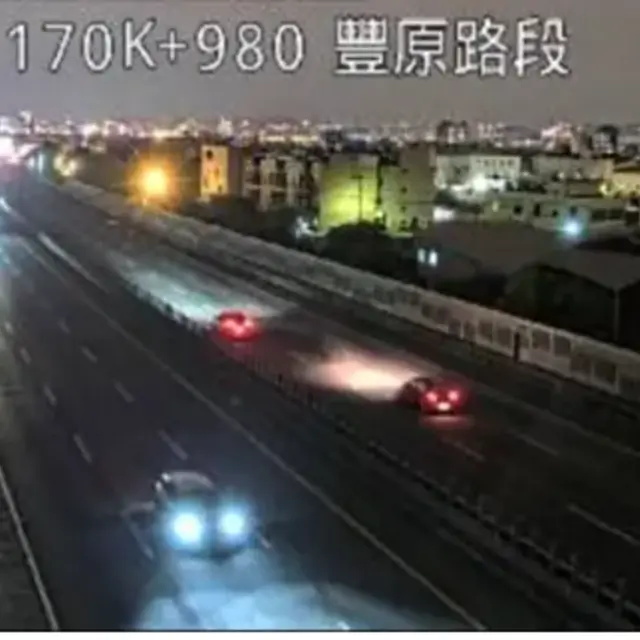
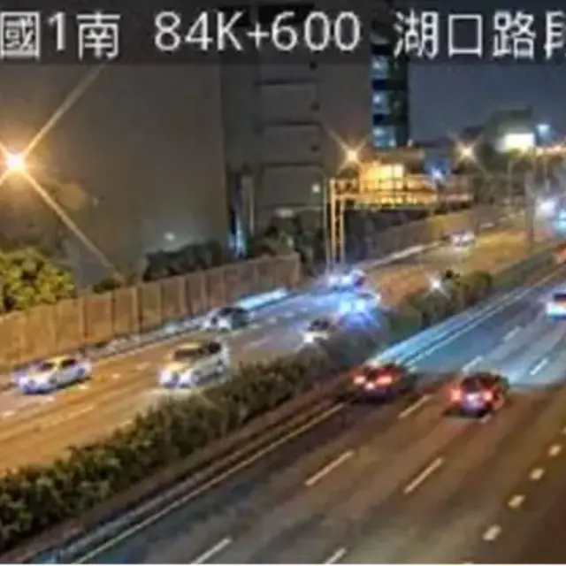
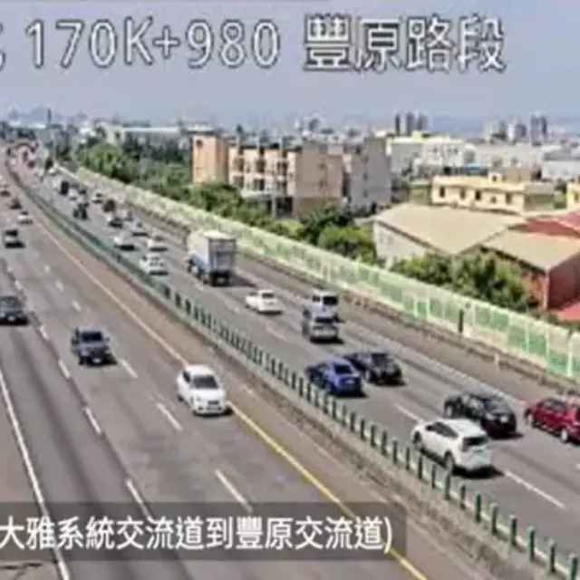
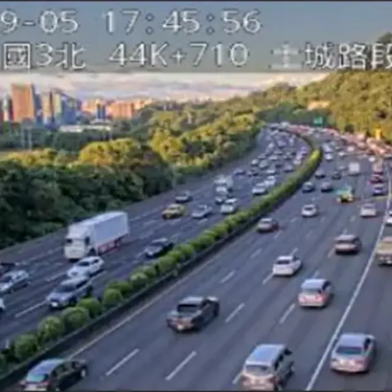
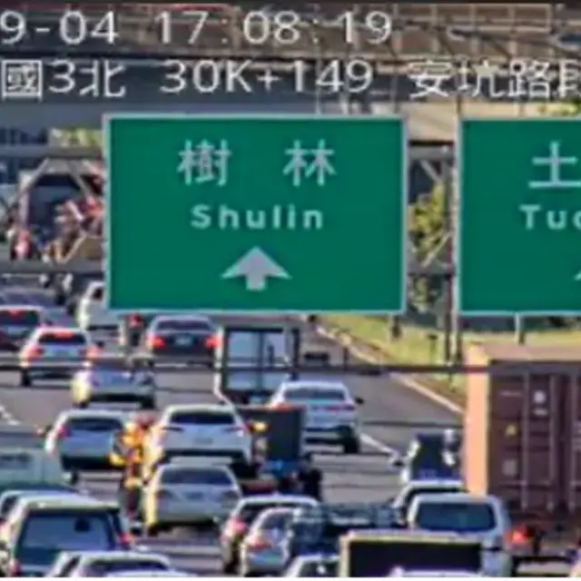
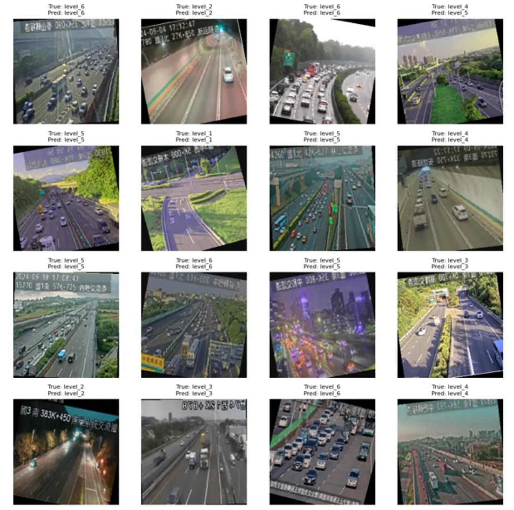
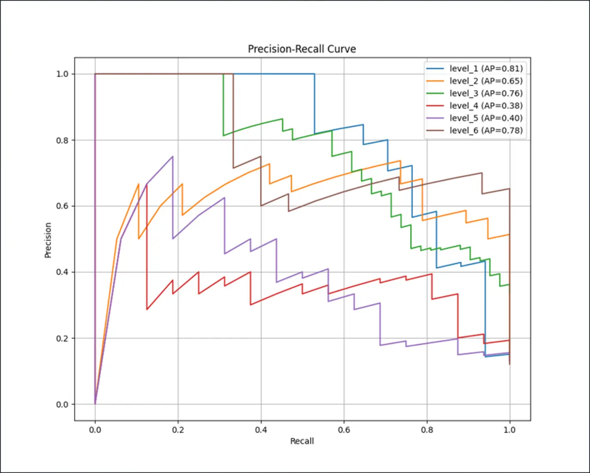

The structure was clear, but more weather, distance, and camera variation was still needed.
Android application / Capstone
AI Driving Assistant
A five-person project that began with a daily problem: traffic information was useful, but fragmented across too many tools.


01The origin
The idea did not begin with AI. It began with the road to class.
I dealt with traffic every day and often saw stories about road accidents in Taiwan. I started asking whether the information drivers already needed could be gathered into one clearer experience.
The goal was not to add another dashboard. It was to reduce switching between navigation, traffic, parking, and search while keeping the driver’s task in context.
02My role
I led the team and worked across the seams where data, models, Android, and people had to agree.
- 01TEAM LEADPlanning, task ownership, progress, and coordination across five people.
- 02API / TDXTDX open-data research, Postman token tests, endpoints, and response mapping.
- 03DATASETCollecting, cleaning, and preparing traffic-camera images for six classes.
- 04RESNET-18Training, evaluation, class-level analysis, and conversion troubleshooting.
- 05ANDROIDConnecting the model and data services to the mobile experience.
03The system
One request crosses several systems before it becomes useful.
The voice layer is only the entrance. Product value appears when the request becomes structured intent, reaches the correct data source, and returns as a clear response.
- 01NAVIGATIONGoogle Maps
- 02PARKINGTDX open data
- 03TRAFFICCamera + road data
- 04AIGPT / STT / TTS
- 05MODELResNet-18 / 6 levels
INTERACTIVE PROTOTYPE — SIMULATED
Voice in.
Parking result out.
Simulated flow — no live API.
- 01VOICEDriver request
- 02STTSpeech to text
- 03GPTUnderstand intent
- 04TDX APIOpen data
- 05PARKINGAvailable spaces
- 06RESPONSESpeak result
04MODEL / REALITY
RESNET-18 / SIX TRAFFIC LEVELS
The evidence mattered more than
one accuracy number.






01 / TRAINING DATA
Real road-camera samples.

Adjacent levels were confused.

L4 / L5 were weakest.
- L1
- .81
- L2
- .65
- L3
- .76
- L4
- .38
- L5
- .40
- L6
- .78
Original capstone material · ResNet-18 · 80% training / 20% validation
These adjacent traffic conditions were the hardest for the model to separate.
Normalization had to remain identical from PyTorch to Android.
What we changed
- Unified normalization
- Reorganized the dataset
- Read Precision / Recall by class
05IF I BUILT IT AGAIN
What would turn the prototype into a better product?
- 01A larger, better-balanced dataset
- 02A clearer traffic experience
- 03Accident notifications
- 04Speed-camera information
- 05Smoother, more contextual AI interaction
Key learning
“A useful AI product is not just the model. It is the full system around it — context, data, interaction, and trust.”